Psicología del Desarrollo I / Una trayectoria, muchas formas de crecer
Un recorrido por las etapas de la vida↓
01 · El proyecto
Aprender a mirar el proceso
El desarrollo humano es un proceso continuo en el que experimentamos cambios físicos,
cognoscitivos y
psicosociales desde antes de nacer y a lo largo de toda nuestra vida.Este portafolio reúne los aprendizajes,
actividades y experiencias desarrolladas durante la asignatura Psicología del Desarrollo I. A través de
diferentes recursos y ejercicios, exploramos las etapas del ciclo vital, las teorías que explican sus
transformaciones y los factores que influyen en ellas.Más que recopilar trabajos, este espacio busca
compartir una experiencia de aprendizaje y reflexión, conectando los conocimientos psicológicos con
situaciones reales y reconociendo que cada persona tiene una trayectoria de desarrollo única.
Una idea que nos acompaña
Más que recopilar trabajos, queremos conectar los conocimientos psicológicos con situaciones reales y
reconocer que cada persona tiene una trayectoria de desarrollo única.
“
Quienes recorren este camino
Dos voces, una curiosidad compartida
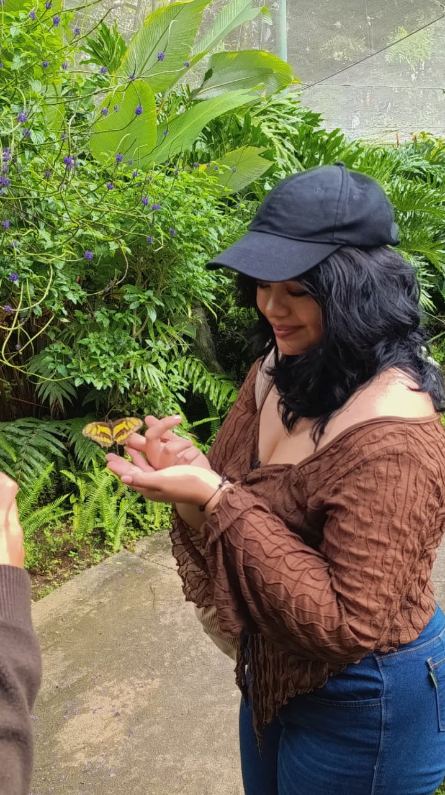
LRFotografía por incorporar
Estudiante de Psicología
Loren Yulieth Rodríguez Piratoba
Me considero alguien en constante aprendizaje y descubrimiento. Amo el arte y poder plasmarlo o darlo a
conocer. Disfruto reflexionar y tener tiempo para mí; actualmente lo aprecio mucho más. Algunos de mis
intereses se relacionan con la Psicología. Me gusta destacar porque siento que es fruto de mis
esfuerzos, aunque a veces olvido reconocerlo. Intento seguir aprendiendo: creo que eso puede agregar
bondad a este mundo y me gustaría aportar en ello.
LPFotografía por incorporar
Estudiante de Psicología
Laura Valentina Perdomo Tejada
Me percibo como una persona sensible, emocional y llena de matices. Soy soñadora, espontánea, reflexiva
y curiosa; también puedo ser contradictoria. Me encuentro en la música, los libros y las pequeñas cosas
que despiertan mi interés. Disfruto conocer, cuestionar, experimentar y descubrir perspectivas. Valoro
mis vínculos y mis espacios personales. Tengo sueños y ganas de vivir experiencias que me permitan
crecer, mientras aprendo a disfrutar de quien soy en el presente.
02 · Intención y recorrido
Lo que guía este aprendizaje
◎
Propósito general
Compartir los aprendizajes y experiencias de Psicología del Desarrollo, explorando las etapas del ciclo
vital, las teorías que explican sus transformaciones y los factores que influyen en ellas.
Reconocer dimensiones
Identificar las principales características y transformaciones de las etapas del desarrollo humano.
Relacionar teorías
Reconocer las perspectivas teóricas y los factores biológicos, psicológicos y socioculturales que
explican
el desarrollo.
Observar con cuidado
Aplicar conocimientos mediante ejercicios de observación, investigación y análisis de situaciones reales.
Reflexionar sobre el contexto
Reflexionar sobre los aprendizajes adquiridos y su importancia para la formación profesional en
Psicología.
Un mapa para seguir creciendo
El desarrollo humano está influenciado por tres factores que interactúan entre sí.
01 / Biología
Herencia
Son las características biológicas y genéticas que recibimos de nuestros padres.
02 / Experiencia
Ambiente
Experiencias y condiciones externas, como la familia, la cultura, la alimentación y las
relaciones sociales.
03 / Crecimiento
Maduración
Son aquellos cambios físicos y biológicos que ocurren a medida que crecemos.
Normativas relacionadas con la edad
Cambios propios de cada etapa, como la pubertad.
Normativas relacionadas con la historia
Acontecimientos que afectan a una generación, como una guerra o la pandemia.
No normativas
Experiencias particulares que no todas las personas viven. Por ejemplo, el fallecimiento de
alguno de los cuidadores de un menor.
Las teorías ponen el foco en mecanismos distintos. Dos modelos generales ayudan a
comparar cómo explican el cambio.
Modelo mecanicista
La persona responde a influencias
Concibe el desarrollo como una respuesta a fuerzas externas y experiencias. Sus cambios pueden
entenderse como graduales y acumulativos.
↔
Modelo organicista
La persona construye y se transforma
Entiende al organismo como activo. El desarrollo avanza mediante reorganizaciones y cambios
cualitativos a lo largo del ciclo vital.
Cinco perspectivas del desarrollo humano
01
Psicoanalítica
Freud propuso etapas psicosexuales; Erikson describió desafíos psicosociales a lo largo de la
vida.
02
Del aprendizaje
Pavlov y Watson estudiaron el condicionamiento clásico; Skinner, el operante; Bandura, el
aprendizaje por observación y la determinación recíproca.
03
Cognoscitiva
Piaget explicó cambios en la organización del pensamiento y en la construcción activa del
conocimiento.
04
Contextual
Considera la influencia de los entornos y las relaciones entre persona y contexto en el
desarrollo.
05
Evolutiva / sociobiológica
Relaciona el desarrollo con la evolución y la biología del comportamiento; considera cómo ciertas
conductas pueden contribuir a la adaptación.
✳
Actividad realizada
Organizador gráfico de las perspectivas del desarrollo humano.
A través de este trabajo identificamos los principales modelos y perspectivas teóricas, sus
autores y sus aportes para comprender los cambios que experimentamos durante la vida.
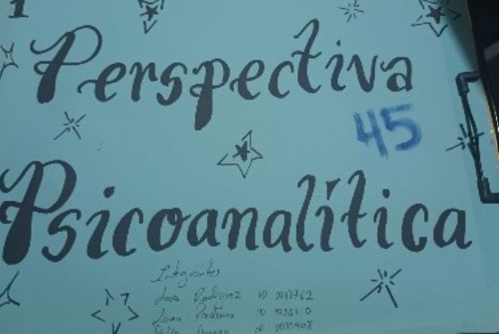
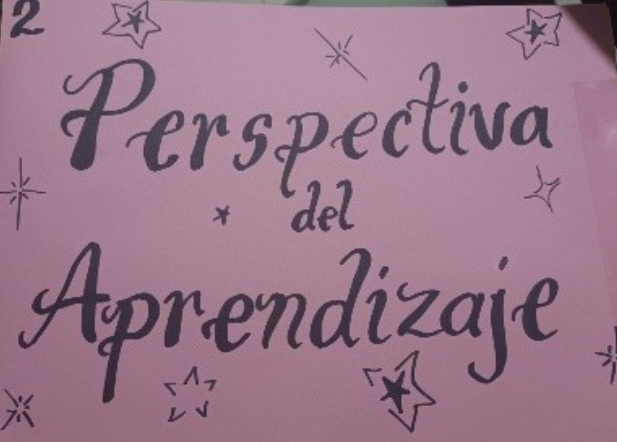
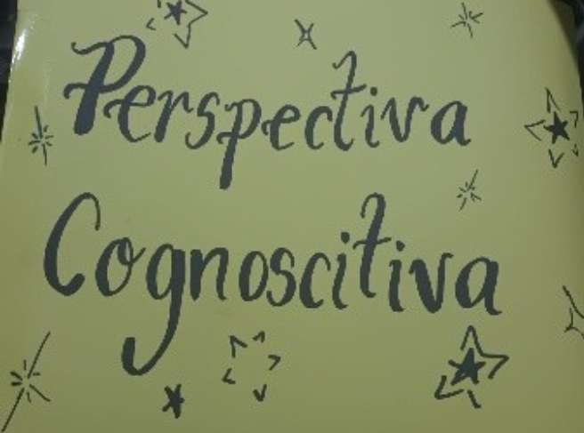
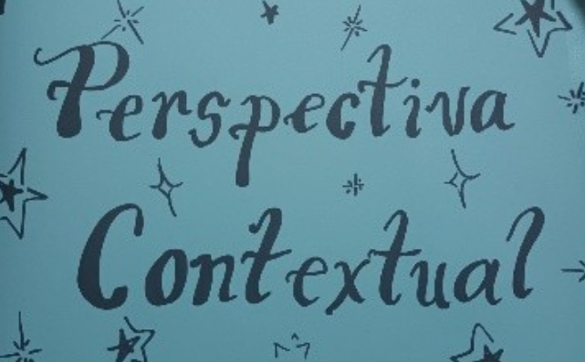
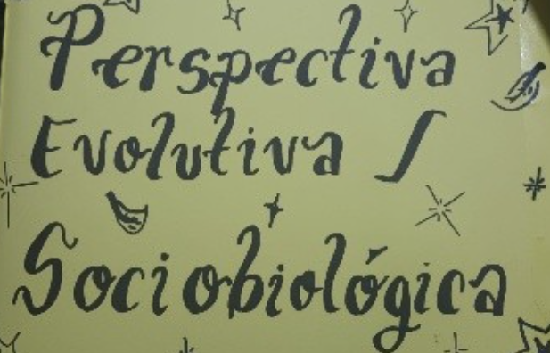
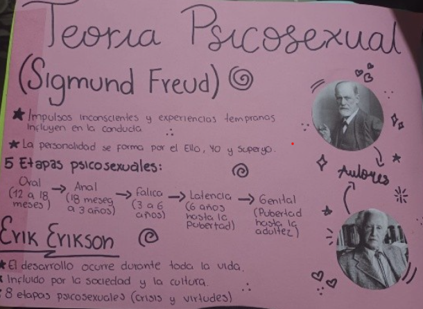
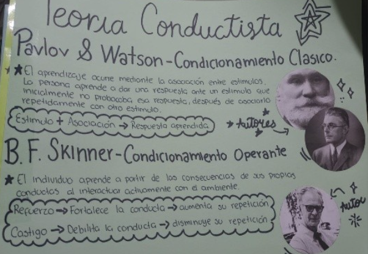
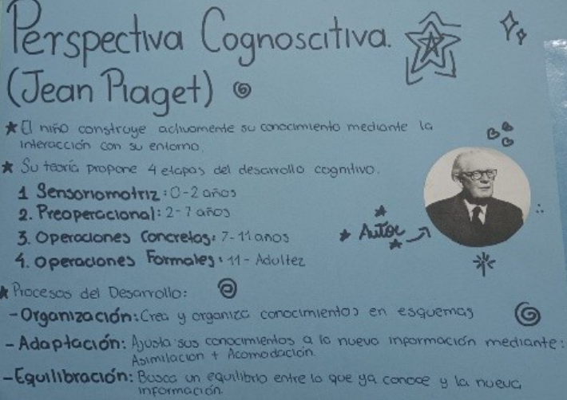
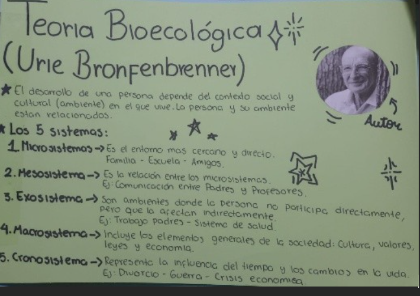
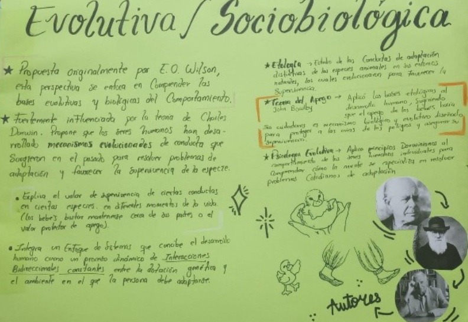
Comprendimos que el desarrollo humano puede estudiarse desde
diferentes perspectivas. Cada teoría permite observar aspectos particulares de la persona, como sus
emociones, aprendizajes, pensamientos, relaciones y bases biológicas. Por eso, estas perspectivas
ofrecen diferentes herramientas para comprender el desarrollo de manera más amplia e integral.
La observación nos permite reconocer cómo se manifiestan las habilidades y las
formas de interacción de los niños en diferentes situaciones. Es una herramienta de la psicología del
desarrollo que permite identificar comportamientos y características en distintas áreas, algunas como:
Motricidad gruesa: coordinación, equilibrio y movimientos corporales.
Motricidad fina: precisión manual y coordinación ojo-mano.
Personal social: interacción, expresión emocional y autorregulación.
Audición y lenguaje: comprensión, expresión verbal y comunicación.
Actividad
Ficha de observación infantil
La actividad consistió en observar a un niño de 11 años,
perteneciente a la etapa de niñez media, mediante diferentes ejercicios que permitieron reconocer
características de su desarrollo.
↗
Motricidad gruesa
Durante las actividades de carrera y baile se observaron dificultades en la coordinación de los
movimientos, el equilibrio y el seguimiento del ritmo.
⌁
Motricidad fina
En los ejercicios de recorte y origami presentó dificultades para seguir contornos, realizar
cortes precisos y ejecutar pliegues simétricos.
♡
Personal social
Se identificaron dificultades para integrarse y negociar con sus compañeros. Ante situaciones
de desacuerdo o frustración, presentó irritabilidad y elevación del tono de voz.
◌
Audición y lenguaje
Durante la partida de ajedrez demostró comprensión de instrucciones complejas, razonamiento
estratégico y vocabulario amplio. En el debate sobre videojuegos expresó y argumentó sus ideas,
aunque presentó dificultades para manejar los desacuerdos.
Síntesis elaborada a partir de los registros de la ficha de
observación.
Esta actividad nos permitió comprender que el desarrollo infantil
integra diferentes áreas que se relacionan entre sí. Aprendimos que observar no consiste solamente
en identificar dificultades, sino también en reconocer habilidades y fortalezas, teniendo en cuenta
la edad y el contexto del niño, sin establecer conclusiones apresuradas.
Las observaciones de menores se anonimizan y se limita aquí la información a su
relevancia académica.
El desarrollo prenatal comprende los cambios que ocurren desde la fecundación
hasta el nacimiento. Durante este proceso, una sola célula da origen a un organismo en formación, en
el que se desarrollan progresivamente las estructuras y funciones necesarias para la vida.
Las etapas del desarrollo prenatal
01
Primeras dos semanas
Etapa germinal
Comienza con la fecundación, cuando el espermatozoide se une al óvulo y se forma el cigoto.
Después, este inicia divisiones celulares mediante mitosis, conocidas como segmentación, pasando
por las etapas de 2, 4 y 8 células. Posteriormente, estas forman la mórula, una agrupación de
aproximadamente 16 a 32 células, que luego se transforma en blastocisto. Esta estructura llega al
útero, específicamente al endometrio, y comienza el proceso de implantación aproximadamente entre
los días 6 y 7 después de la fecundación.
02
Tercera a octava semana
Etapa embrionaria
En esta etapa se forman las principales estructuras del organismo. Comienzan a desarrollarse el
cerebro, la médula espinal, el corazón, los órganos y las extremidades. También inicia la
formación de la placenta y el cordón umbilical, fundamentales para el intercambio de nutrientes y
oxígeno.
Es una etapa especialmente sensible, porque las estructuras principales del cuerpo están en
formación.
03
Desde la novena semana hasta el nacimiento
Etapa fetal
El embrión pasa a denominarse feto. Durante esta etapa, los órganos continúan desarrollándose y
madurando, el cuerpo crece y se fortalecen los sistemas corporales.
Primeros meses: se desarrollan los rasgos corporales, los huesos y las
extremidades.
Meses intermedios: aumentan los movimientos, se desarrollan los sentidos y
comienza a responder a sonidos.
Últimos meses: aumenta de peso, acumula grasa corporal para adaptarse a la
temperatura del ambiente y maduran especialmente el cerebro y los pulmones, preparándose para la
vida fuera del útero.
Principios del desarrollo prenatal
Además de sus etapas, el desarrollo prenatal sigue dos principios
fundamentales. Estos explican cómo se van formando y organizando progresivamente las estructuras
corporales.
01 / Dirección del desarrollo
Cefalocaudal
El desarrollo avanza desde la cabeza hacia las partes inferiores del cuerpo.
02 / Dirección del desarrollo
Proximodistal
El desarrollo avanza desde el centro del cuerpo hacia las extremidades.
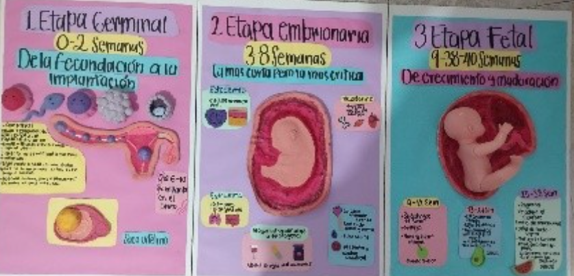
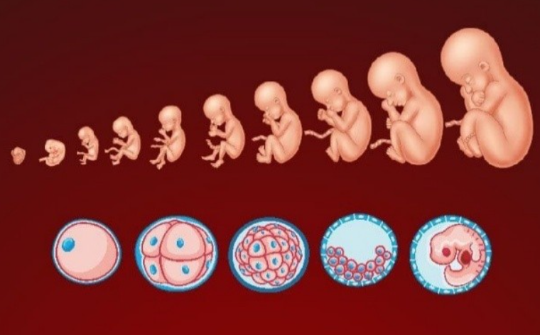
Datos curiosos
Más sobre el desarrollo antes del nacimiento
01
La placenta no cumple solamente la función del intercambio de nutrientes entre el feto y la
madre; además, sirve para proteger al feto del sistema inmunológico de la madre. En un inicio,
el bebé es como un ente extraño dentro del cuerpo de la madre, lo cual alerta a su sistema
inmunológico viéndolo como una amenaza. Aquí es donde entra la placenta, protegiendo al bebé.
02
El embarazo dura aproximadamente 40 semanas, contadas desde el primer día de la última
menstruación. Sin embargo, no todos los nacimientos ocurren en la misma semana.
03
La memoria fetal empieza a funcionar hacia la semana 30 y se consolida en la semana 34.
04
El feto responde a sonidos y vibraciones desde la semana 26 a la 32; escucha los latidos y la
voz de su madre.
05
En estudios mencionados en el libro de Papalia, bebés recién nacidos de 3 días mostraron
preferencia por un cuento que su madre les había leído repetidamente durante el embarazo:
succionaban con más frecuencia su chupete al escuchar la grabación de este cuento.
06
Reconocen el idioma materno y la voz de su mamá.
Clasificación según la edad gestacional
Prematuro: nacimiento antes de completar las 37 semanas.
A término temprano: entre las semanas 37 y 38, más 6 días.
A término completo: entre las semanas 39 y 40, más 6 días.
A término tardío: entre las semanas 40 y 41, más 6 días.
Postérmino: a partir de las 42 semanas.
Un nacimiento prematuro puede implicar que algunos órganos,
especialmente los pulmones y el cerebro, todavía necesiten madurar. Por eso, estos bebés pueden
requerir mayor atención médica especializada. En cambio, un nacimiento a término completo ofrece más
tiempo para que el organismo alcance una mayor madurez antes del nacimiento.
¿Qué puede influir en este proceso?
Factores como la nutrición materna, las condiciones de salud, el consumo de determinadas
sustancias, las infecciones y otros agentes ambientales pueden influir en el desarrollo prenatal.
Durante la primera infancia, especialmente los primeros tres años, se transforman
las habilidades que permiten explorar el entorno y relacionarse con otras personas.
Dominio¿Qué cambios podemos observar?
FísicoCrecimiento corporal, desarrollo
cerebral, coordinación y adquisición de habilidades motoras.
CognoscitivoDesarrollo del lenguaje,
memoria, atención, aprendizaje y exploración del entorno.
PsicosocialFormación del apego,
expresión emocional, temperamento e interacciones sociales iniciales.
Conectemos con las teorías
Jean Piaget
La etapa sensoriomotora describe cómo el niño construye sus primeros conocimientos mediante los
sentidos y los movimientos.
Esther Thelen
Las habilidades motoras surgen de la interacción entre el cuerpo, el entorno y la experiencia.
Mary Ainsworth
Sus estudios sobre patrones de apego resaltan la importancia de las relaciones con las figuras
cuidadoras.
Los primeros años no representan únicamente crecimiento físico: también son
fundamentales para el pensamiento, el movimiento, la expresión emocional y las primeras relaciones.
Durante la segunda y tercera infancia cambian la forma de pensar, de relacionarse
y de comprender el mundo. El juego y las experiencias escolares acompañan estas transformaciones.
AspectoSegunda infancia 3–6 añosTercera infancia 6–11 años
FísicoMayor
coordinación y control motor.Más precisión y desarrollo de habilidades
motoras.
CognoscitivoPensamiento preoperacional y juego simbólico.Operaciones
concretas y razonamiento lógico.
PsicosocialIniciativa, autonomía y desarrollo de relaciones.Autoconcepto, autoestima y sentido de competencia.
Dos lentes para comprender los cambios
Piaget
Ayuda a comprender la evolución del pensamiento infantil.
Erikson
Describe los desafíos de iniciativa frente a culpa y laboriosidad frente a inferioridad.
El juego, la exploración, la interacción social y las experiencias escolares
ayudan a construir una comprensión cada vez más amplia del entorno.
La Cámara de Gesell ofrece un espacio acondicionado para observar conductas sin
intervenir constantemente. Las actividades permiten acercarse a distintas habilidades, siempre
atendiendo al contexto y al ritmo de cada niño.
↗
Desarrollo Motor
Coordinación, equilibrio y movimientos.
◌
Desarrollo Cognoscitivo
Atención, comprensión y resolución de situaciones.
♡
Desarrollo Psicosocial
Interacción, expresión emocional y comportamiento ante otras personas.
Dos experiencias, observadas con respeto
Durante la experiencia se trabajó con dos niños de diferentes etapas del
desarrollo. A cada uno se le aplicaron tres actividades, una por cada dominio, para observar sus
habilidades y comportamientos.
4 años · niñez temprana
Alam Mathias
Dominio motor: circuito con cinta en el suelo, saltos y pases de pelota.
Dominio psicosocial: construcción de torres, reconocimiento de emociones y
juego de disfraces.
Dominio cognoscitivo: seguimiento de instrucciones, preguntas cotidianas y
clasificación de figuras por forma y color.
¿Qué encontramos? Mostró coordinación al caminar,
saltar y recibir la pelota; iniciativa en los juegos de construcción y disfraces; y capacidad para
reconocer emociones, especialmente la alegría, más que cualquier otra, y clasificar figuras.
9 años · niñez media
Nicol Mariana
Dominio motor: juego “Seguir la voz”, copia de una figura y recorte con
tijeras.
Dominio psicosocial: creación artística, conversación sobre sus intereses y
autoconcepto.
Dominio cognoscitivo: orientación espacial y temporal, resolución de sumas,
restas y multiplicaciones.
¿Qué encontramos? Evidenció capacidad para corregir sus
respuestas, precisión en actividades manuales, autonomía en sus creaciones artísticas y
habilidades de razonamiento matemático.
Errores que conviene evitar
Aspecto
Error que se debe evitar
¿Por qué es importante?
Intervención del acompañante
Permitir que el cuidador responda por el niño, le indique qué hacer o lo corrija durante las
actividades.
Puede influir en sus respuestas y dificultar la observación de sus habilidades de manera
espontánea.
Distractores del entorno
Permitir que suenen celulares, atender llamadas o utilizar dispositivos durante la sesión.
Puede interrumpir la atención del niño y afectar su participación en las actividades.
Etiquetar comportamientos
Asignar diagnósticos o utilizar expresiones como «hiperactivo» o «poco sociable» a partir de
comportamientos aislados.
Una conducta por sí sola no permite establecer un diagnóstico. Es necesario comprenderla
dentro del contexto y del proceso de desarrollo del niño.
Ignorar el estado del niño
Realizar la sesión cuando presenta sueño, hambre, malestar físico o emocional.
Estas condiciones pueden influir en su disposición y desempeño durante las actividades.
Mantener un orden rígido
Insistir en una actividad cuando el niño muestra temor, inseguridad o poca disposición.
Puede aumentar su incomodidad y dificultar su participación.
Extender demasiado las actividades
Dedicar demasiado tiempo a una sola tarea o insistir cuando el niño pierde el interés.
Puede generar cansancio, frustración o desinterés.
Recomendaciones para una buena observación
Antes
Orientar al cuidador sobre la actividad y cuándo intervenir.
Preparar un espacio organizado y sin distractores.
Silenciar dispositivos para evitar interrupciones.
Contar con consentimiento informado y verificar la edad.
Durante
Generar confianza y permitir adaptación al espacio.
Ubicarse a la altura del niño y mantener una interacción cercana.
Ser flexibles y respetar sus ritmos, sin presionar.
Observar cómo resuelve, no solo si logra completar la tarea.
Después
Agradecer su participación y reconocer su esfuerzo.
Comunicar observaciones con claridad y sin etiquetas.
Proteger la confidencialidad de registros y datos personales.
Esta experiencia nos permitió comprender que el juego y las actividades dirigidas son herramientas
valiosas para observar el desarrollo infantil. También reconocimos que cada niño manifiesta
habilidades, intereses y ritmos particulares, por lo que es importante analizar su comportamiento de
manera integral y teniendo en cuenta su etapa de desarrollo.
Por otra parte, entrar por primera vez a la Cámara de Gesell resulta una experiencia inquietante.
Es inevitable sentir algo de miedo o ansiedad al saber que estarás frente a otra persona,
observándola e intentando comprender su comportamiento. Esto incluso te lleva a cuestionarte: ¿quién
soy yo para determinar algo sobre esta persona? Y es precisamente ahí donde cobra sentido aquella
reflexión atribuida a Carl Jung: “Conozca todas las teorías. Domine todas las técnicas, pero, al
tocar un alma humana, sea apenas otra alma humana”. Porque, más allá de los conocimientos que
adquirimos, esta experiencia nos recuerda que estamos observando a personas, no simplemente
comportamientos que debemos clasificar. Cada niño tiene una historia, una forma particular de
relacionarse con el mundo y un proceso de desarrollo que merece ser comprendido con respeto y
sensibilidad.
La adolescencia es una etapa de transición entre la niñez y la adultez,
caracterizada por transformaciones físicas, cognoscitivas, emocionales y sociales. Sin embargo, no
siempre se ha vivido ni comprendido de la misma manera, pues también está influenciada por el contexto
histórico y cultural.
Una etapa en contexto histórico y cultural
Anteriormente, en algunas sociedades, el paso de la niñez a la adultez era mucho más directo: al
aprender un oficio o una habilidad, los jóvenes comenzaban a trabajar y asumían responsabilidades
propias de los adultos. Con el tiempo, las transformaciones sociales y culturales dieron lugar a una
etapa de transición más reconocida y diferenciada.
#
Cultura digital e identidad
¿Está cambiando la forma en que vivimos la adolescencia?
¿Está cambiando la forma en la que vivimos la adolescencia o incluso está desapareciendo parte de
lo que entendíamos por ella? Si pensamos en años anteriores, encontramos referentes culturales que
representaban esa etapa, como Justin Bieber o Hannah Montana, con los que muchos adolescentes
podían identificarse. Actualmente, en cambio, vemos cómo tendencias asociadas a jóvenes adultos,
como el clean look, se hacen cada vez más presentes entre niñas de edades tempranas. La
globalización y el acceso a internet, especialmente a plataformas como TikTok, permiten que estas
tendencias lleguen rápidamente a niños y adolescentes, quienes comienzan a adoptarlas como
propias.
La adolescencia es una etapa en la que exploramos, probamos y descubrimos quiénes somos. En mi
caso, por ejemplo, pasé por diferentes estilos antes de encontrar uno con el que me sintiera
identificada, y seguramente seguirá cambiando con el tiempo. Sin embargo, cabe preguntarnos si
actualmente los adolescentes están teniendo las mismas oportunidades de exploración o si, por el
contrario, están adoptando desde edades tempranas estilos y referentes que las redes sociales
presentan como ideales. Quizás, en lugar de permitirnos experimentar y descubrir nuestra
identidad, estamos comenzando a ajustarnos a una imagen que ya está definida por las tendencias.
Es una cuestión que merece una reflexión mucho más amplia, pero que nos invita a pensar en cómo la
cultura digital está transformando la manera en que niños y adolescentes crecen, se identifican y
construyen su propia identidad.
¿Adolescencia y pubertad son lo mismo?
Aunque están relacionadas, son procesos diferentes:
Adolescencia
Comprende los cambios físicos, psicológicos y sociales que acompañan la transición hacia la
adultez.
Pubertad
Proceso biológico mediante el cual se alcanza la madurez sexual y reproductiva.
¿Qué sucede durante la pubertad?
La pubertad comienza con una serie de cambios hormonales que impulsan
el crecimiento corporal y la maduración sexual.
01 · Activación hormonal
Adrenarquia y gonadarquia
Adrenarquia: las glándulas suprarrenales aumentan la producción de
andrógenos, favoreciendo la aparición de vello corporal, cambios en la piel y olor corporal.
Gonadarquia: se activa la producción de hormonas sexuales que impulsan la
maduración de los órganos reproductivos.
02 · Cambios físicos
Crecimiento y maduración
Crecimiento acelerado de estatura y peso.
Desarrollo de características sexuales primarias y secundarias.
Cambios en la voz, la piel y la distribución del vello corporal.
Aparición de la primera menstruación (menarquia) y primera eyaculación (espermarquia).
Un cerebro que continúa reorganizándose
Durante la adolescencia, el cerebro continúa desarrollándose y
reorganizándose mediante dos procesos importantes:
⌁
Poda sináptica
Se eliminan conexiones neuronales poco utilizadas, haciendo más eficiente el funcionamiento
cerebral.
≋
Mielinización
Aumenta la materia blanca, favoreciendo una comunicación más rápida entre las neuronas.
◒
Corteza prefrontal
Relacionada con la planificación, el juicio y el control de impulsos, continúa madurando
progresivamente.
La toma de decisiones · modelo de Laurence
Steinberg
La toma de decisiones también está influida por la interacción entre dos
redes:
Red socioemocional
Es especialmente sensible a las emociones, las experiencias nuevas y la influencia de sus
amigos. De manera coloquial, podríamos describir esta etapa como un “arrebato emocional”, pues
durante la adolescencia existe una tendencia a buscar experiencias intensas, sentir las
emociones con mayor fuerza y vivir cada situación al máximo. Esta necesidad de experimentar y
explorar nuevas sensaciones, sumada a la influencia del grupo de amigos, al sentido de
pertenencia y a que la autorregulación emocional todavía está en desarrollo, puede favorecer la
aparición de conductas de riesgo.
↔
Red de control cognoscitivo
Participa en la regulación de las respuestas, el autocontrol y la valoración de las
consecuencias, no solo momentáneas, sino también a largo plazo.
Oportunidades y riesgos
Esta etapa representa oportunidades para fortalecer la autonomía, la
autoestima, las relaciones sociales y las habilidades cognoscitivas. Sin embargo, también pueden
presentarse situaciones que afectan el bienestar:
Oportunidades
Fortalecer la autonomía, la autoestima, las relaciones sociales y las habilidades cognoscitivas.
Situaciones que pueden afectar el bienestar
Salud física: accidentes, alteraciones del sueño y sedentarismo.
Consumo de sustancias: alcohol, tabaco y otras drogas.
Salud sexual: embarazos no planeados e infecciones de transmisión sexual.
Salud mental: dificultades emocionales y trastornos de la conducta
alimentaria.
Violencia y seguridad: acoso escolar, ciberacoso y otras formas de violencia.
Riesgos psicosociales y digitales: presión de grupo, aislamiento y uso
problemático de tecnologías.
Entre los factores de riesgo, una realidad social
Toyoko Kids
La adolescencia no está determinada únicamente por los cambios que experimenta cada persona, sino
también por el entorno en el que crece, las relaciones que construye y las experiencias que
atraviesa. Aunque es una etapa llena de oportunidades, también puede representar un periodo de mayor
vulnerabilidad cuando no existen suficientes redes de apoyo o factores de protección.
Para comprender mejor cómo se manifiestan estas situaciones, podemos tomar como ejemplo el fenómeno
de los Toyoko Kids, en Japón. Se trata de grupos de niños y adolescentes que comenzaron a reunirse
en los alrededores de Kabukicho, en Tokio, buscando principalmente un espacio de encuentro,
pertenencia y conexión con otras personas.
Este fenómeno permite observar cómo diferentes factores pueden relacionarse entre sí: dificultades
familiares, problemas escolares, falta de acompañamiento, necesidad de pertenecer a un grupo y
búsqueda de aceptación. En algunos casos, estas condiciones pueden aumentar la exposición a
situaciones de violencia, explotación y otros riesgos.
Esto nos lleva a una pregunta importante:
¿Qué sucede cuando un adolescente encuentra en la calle el sentido
de pertenencia, la compañía o la aceptación que no está encontrando en otros espacios?
Más que señalar o juzgar sus comportamientos, este fenómeno nos invita a mirar lo que puede existir
detrás de ellos y a comprender por qué los factores de protección, como el acompañamiento familiar,
los vínculos positivos y el apoyo social, son tan importantes durante esta etapa.
Entre algunas conductas de riesgo están los comportamientos o situaciones que
pueden comprometer el bienestar físico, psicológico y social de los adolescentes. Aunque esta etapa
representa oportunidades para fortalecer la autonomía, la identidad y las relaciones sociales, también
puede existir una mayor exposición a situaciones de riesgo.
Kabukicho · Tokio, Japón
Los Toyoko Kids son grupos de adolescentes y jóvenes que se reúnen en los alrededores del edificio
TOHO, en el distrito de Kabukicho, Tokio, Japón. Algunos han abandonado sus hogares y encuentran en
este espacio una posibilidad de encuentro y pertenencia.
Este fenómeno ha llamado la atención por las situaciones de vulnerabilidad que pueden experimentar
algunos de estos jóvenes, relacionadas con dificultades familiares, desvinculación escolar, consumo
de sustancias y problemas de salud mental.
¿Qué encontramos detrás de esta realidad?
Para comprender el fenómeno, podemos relacionarlo con tres dimensiones
del desarrollo:
A
Desarrollo físico y cognitivo
Durante la adolescencia, el cerebro continúa desarrollándose, especialmente las áreas
relacionadas con la planificación, la toma de decisiones y el control de impulsos.
Desde el planteamiento de Laurence Steinberg, existe una maduración progresiva entre los
sistemas relacionados con la búsqueda de sensaciones y los encargados del control cognitivo.
Esto puede influir en la manera de responder ante situaciones emocionalmente intensas o ante la
presión de los pares.
En el caso de los Toyoko Kids, esta perspectiva permite analizar cómo la búsqueda de
experiencias, la influencia social y las dificultades para regular las emociones pueden
relacionarse con determinadas conductas de riesgo. Sin embargo, el desarrollo cerebral no
explica por sí solo el fenómeno.
B
Desarrollo emocional y psicosocial
Desde la teoría de Erik Erikson, la adolescencia corresponde a la etapa de identidad frente a
confusión de roles. Durante este periodo, los jóvenes exploran quiénes son, qué quieren y a qué
grupos desean pertenecer.
En este sentido, podemos relacionar el fenómeno con la búsqueda de aceptación y pertenencia.
Algunos adolescentes pueden encontrar en estos grupos vínculos y compañía que sienten que no
tienen en otros espacios.
Esto no significa que todos los grupos representen un entorno negativo, sino que debemos
prestar atención a las condiciones y dinámicas que pueden aumentar la vulnerabilidad de sus
integrantes.
C
Desarrollo social y contextual
Desde el modelo bioecológico de Urie Bronfenbrenner, el desarrollo no puede comprenderse
separado del entorno. Para analizar este caso, podemos identificar diferentes sistemas.
Los sistemas del modelo bioecológico
Microsistema
Experiencias familiares, relaciones con cuidadores y vínculos con los amigos.
Mesosistema
Relación entre la familia, la escuela y otros espacios de socialización.
Exosistema
Servicios de protección, instituciones de salud y condiciones del entorno comunitario.
Macrosistema
Cultura, condiciones sociales y normas que influyen en la manera de comprender y atender a los
adolescentes.
Esta perspectiva permite reconocer que las conductas de riesgo no
aparecen de manera aislada, sino que pueden estar relacionadas con diferentes experiencias y
condiciones del entorno.
Algunos hallazgos del estudio2025
Nakamura et al.
El estudio de Nakamura y colaboradores (2025), realizado en el Hospital Universitario de Keio,
examinó los antecedentes psicosociales de ocho adolescentes de entre 12 y 16 años que fueron
trasladadas a urgencias desde Kabukicho. Los investigadores encontraron diferentes situaciones de
vulnerabilidad en sus historias familiares, escolares y personales.
El estudio permite reconocer algunas condiciones presentes en las ocho adolescentes evaluadas:
75%provenía de hogares monoparentales
62,5%presentaba ausentismo escolar prolongado
50%tenía antecedentes de maltrato físico
85,7%de los casos con información disponible registraba antecedentes de
autolesión
Estos resultados corresponden a un grupo clínico pequeño y no representan a
todos los jóvenes que hacen parte del fenómeno. Los datos no deben interpretarse como una relación
directa de causa y efecto. Por ejemplo, pertenecer a una familia monoparental no significa que
exista necesariamente una situación de vulnerabilidad. Lo importante es comprender las experiencias,
los vínculos y las condiciones que rodean a cada adolescente.
¿Qué podemos hacer desde la prevención?
Quiroz-Figueroa et al. (2021), en su investigación sobre la prevención de
conductas de riesgo en adolescentes, destacan la importancia del papel de la familia y de implementar
estrategias de acompañamiento y prevención. A partir de esto, podemos reconocer algunas acciones
importantes:
01
Fortalecer la comunicación y la confianza en la familia.
02
Promover espacios seguros para expresar emociones.
03
Favorecer la permanencia y el acompañamiento escolar.
04
Identificar oportunamente situaciones de vulnerabilidad.
05
Crear redes de apoyo entre familia, escuela e instituciones sociales.
El fenómeno de los Toyoko Kids nos permite comprender que las conductas de riesgo durante la
adolescencia no deben analizarse únicamente desde las decisiones individuales. Detrás de ellas
pueden existir experiencias familiares, dificultades emocionales, necesidades de pertenencia y
condiciones sociales que influyen en el desarrollo.
Como futuros psicólogos, este caso nos recuerda la importancia de mirar más allá de lo que podemos
observar a simple vista. No se trata de justificar las conductas que pueden poner en riesgo el
bienestar de un adolescente, sino de comprender qué puede estar influyendo en ellas y qué
condiciones podrían ayudar a prevenirlas.
Una pregunta para quedarnos pensando
¿Estamos prestando suficiente atención a lo que los adolescentes necesitan emocional y socialmente,
o solamente reaccionamos cuando sus comportamientos comienzan a convertirse en un problema?
Referencias transcritas desde el documento fuente. Se conservan los datos disponibles
y los enlaces que aparecen en el PDF.
01
American Psychological Association. (2020). Publication manual of the American Psychological
Association (7th ed.).
02
Barragán, R. (2005). El portafolio, metodología de evaluación y aprendizaje de cara al nuevo EEES.
Revista Latinoamericana de Tecnología Educativa, 4(1), 121–139.
03
Colás, P., et al. (2005). Portafolios y desarrollo de competencias profesionales en el marco del EEES.
Revista de Ciencias de la Educación, 204, 519–538.
04
Ministerio de Salud y Protección Social. (2016). Escala Abreviada de Desarrollo (EAD-3). Bogotá,
Colombia.
05
Papalia, D. E., Feldman, R. D., & Martorell, G. (2012). Desarrollo humano (12.ª ed.).
McGraw-Hill.
06
Shulman, L. (1999). Portafolios docente: una actividad teórica. En N. Lyons (Ed.), El uso del
Portafolios (pp. 45–62). Amorrortu.
07
López Gómez, S. (2008). Optimización en psicología evolutiva y de la salud aplicada al desarrollo
prenatal. Psicología Educativa. Revista de los Psicólogos de la Educación, 14(2), 147–165.
08
Martínez González, D. (s. f.). Desarrollo físico - Adolescencia [Diapositivas de PowerPoint].
Programa de Psicología, Psicología del Desarrollo I.
09
Quiroz-Figueroa, M. S., Lucas-Chóez, M. M., Quijije-Segovia, S. K., & Gutiérrez-Cedeño, M. A. (2021).
Prevención de conductas de riesgo en el adolescente: Rol de la familia. Dominio de las Ciencias,
7(5), 34–52. Consultar en Dialnet ↗
10
Nakamura, S., Baba, T., Tokita, N., Shimizu, C., Yamamoto, R., & Narumi, S. (2025). Toyoko Kids: A
case series on the psychosocial backgrounds of eight runaway girls transported to emergency care in Tokyo.
Pediatrics International, 67(1), e70248. Consultar en PMC ↗